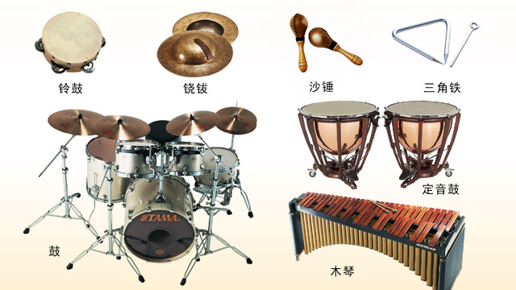
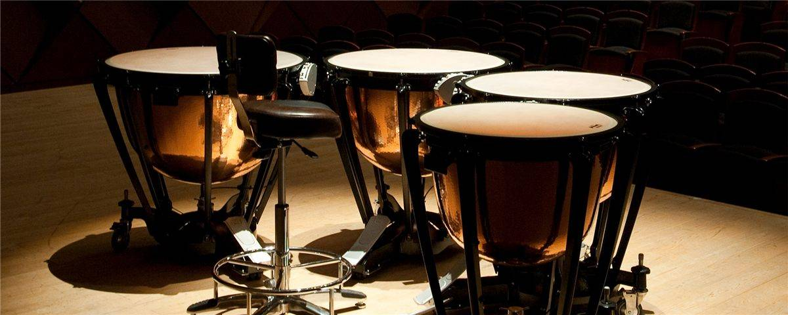

打擊樂器
打擊樂器在管樂團中扮演著重要角色，增添了節奏和聲音效果。常見的打擊樂器包括：
定音鼓：可調音高，提供強烈而明確的節奏。
小軍鼓：以其尖銳的聲音和多變的節奏廣泛應用。
大鼓：低沉有力的聲音，為樂團提供穩定的節奏基礎。
鈸：用於製造銳利和突出的聲音效果，增加音樂的層次感。
三角鐵：清脆的高音，經常用於細膩的節奏點綴。
木魚：獨特的木質敲擊聲，常用於增添東方音樂色彩。
這些樂器的多樣性和靈活性使其能夠在各種音樂風格中發揮作用，增強音樂的表現力和動感。
圖片集

